Introduction - DIESEL FUEL INJECTION
- Path
- Descriptions > 10 ENGINE > 1060 DIESEL FUEL INJECTION > Introduction - DIESEL FUEL INJECTION
- Kind
- system description
- Applies to
- engines: 1.9 JTD 8v , 1.9 JTD 16v, 2.4 JTD 10v, 2.4 JTD 20v; all production periods
- Interactive page
- https://sloeber94.github.io/elrnDB-a156/en/#/3239203
Applies to: engines: 1.9 JTD 16v; all production periods
SPECIFCATIONS
OPERATION
The EDC-16C8 Common Rail is a high pressure electronic injection system for direct injection fast diesel engines.
The main features are:
- availability of high injection pressures (1400 bar);
- possibility of modulating these pressures between 150 bar and a maximum operating pressure of 1400 bar, irrespective of the engine rotation speed and load;
- capacity of operating at high engine speeds (up to 5000 rpm in full load conditions);
- precision injection (advance and duration of injection);
- reduction in consumption;
- reduction in emissions.
The main functions of the system are basically as follows:
- control of fuel temperature;
- control of engine coolant temperature;
- control of quantity of fuel injected;
- control of the idle speed;
- fuel cut-off during overrunning;
- control of cylinder balance from idling up to 350o rpm;
- control of irregular operation;
- control of exhaust fumes during acceleration;
- control of exhaust gas recirculation (E.G.R.);
- control of maximum torque limiting;
- control of maximum speed limiting;
- control of heater plugs;
- control of entry into operation of climate control system (where fitted);
- control of auxiliary fuel pump;
- control of cylinder position;
- control of main and multiple injection advance;
- control of closed loop injection pressure;
- control of electrical balance;
- control of supercharging pressure;
- IMA injector calibration.
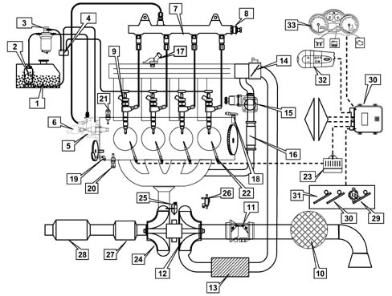
1. Fuel tank 2, Auxiliary fuel pump 3. Fuel filter 4. Accumulator 5. High pressure pump 6. High pressure regulator 7. Joint injector manifold 8. High pressure sensor 9. Injectors 10. Air filter 11. Flow meter 12. Compressor 13. Heat exchanger (air/air) 14. Throttle valve 15. E.G.R. solenoid valve 16. EGR heat exchanger 17. Intake air temperature/pressure sensor 18. Rpm and TDC sensor 19. Timing sensor 20. Water temperature sensor 21. Insufficient oil pressure sensor 22. Heater plugs 23, Heater plugs control unit 24. V.G.T. variable geometry turbine 25. V.G.T. actuator 26. Vacuum modulating solenoid valve 27. Pre-catalyzer 28. Catalyzer 29. Accelerator pedal potentiometer 30. Brake pedal switch 31. Clutch pedal switch 32. Cruise control (where fitted) 33. Instrument panel
OPERATION
Operating strategies
Introduction
The Common Rail systems makes it possible to carry out two pilot injections before T.D.C. with the advantage of distributing teh pressure in the combustion chamber more evenly, reducing the combustion noise, typical of direct injection engines.
The control unit controls the quantity of fuel injected, regulating the line pressure and injection times.
The control unit processes the following information to control the quantity of fuel to inject:
- engine rpm;
- coolant temperature;
- supercharging pressure;
- air temperature;
- intake air quantity;
- battery voltage;
- diesel pressure;
- accelerator pedal position.
Diagram of input/output info to/from control unit
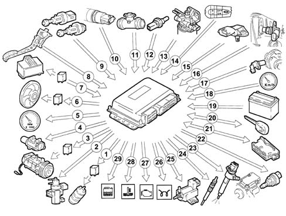
1, Auxiliary electric fuel pump 2, VGT solenoid 3, Air conditioning compressor 4, E.G.R. system solenoid valve 5, Rev counter 6, Electric fans 7, Heater plugs control unit 8, Accelerator pedal potentiometer 9, Brake - clutch pedal switch 10, Fuel pressure sensor 11, Flow meter 12, Engine coolant temperature sensor 13, Fuel temperature sensor 14, Cruise control (where fitted) 15, Excess pressure and intake air temperature sensor 16, Timing sensor 17, RPM sensor 18, Speedometer 19, Battery 20, Alfa Romeo CODE (body computer) 21, Tester connection 22, Pressure regulator 23, Injectors 24, Glow plugs 25, Throttle solenoid (on throttle body) 26, Glow plug warning light 27, Injection warning light 28, Max coolant temperature warning light 29, Water in fuel warning light
Self-diagnosis
The control unit's self-test checks the signals coming from the sensors, comparing them with the permitted limits:
INDICATION OF STARTING FAULTS:
- warning light for 4 s indicates test stage;
- warning light off after 4 s indicates no faults in components that could affect the values established in emission control regulations;
- warning light on after 4 secs indicates fault
FAULT INDICATION DURING OPERATION:
- warning light on indicates fault;
- warning light off indicates no faults in components that could affect the values established in emission control regulations
RECOVERY
From time to time, the control unit defines the type of recovery according to the components which are faulty.
The recovery parameters are managed by those components which are not faulty.
Recognition of the alfa romeo code
When the control unit receives the ignition 'ON' signal, it dialogues with the Body Computer through the Alfa Romeo CODE function to obtain starting enablement.
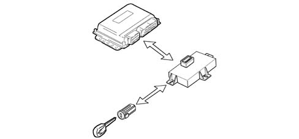
Control of the fuel temperature
With the temperature of the fuel at 80° C , measured by the sensor at the recirculation manifold, the control unit operates the pressure regulator in order to reduce the line pressure (it does not modify the injection times).
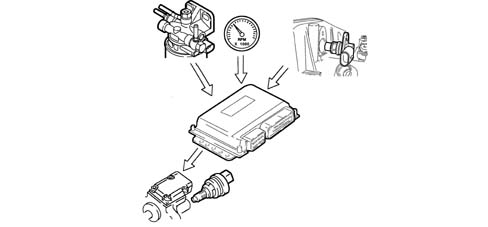
Control of the engine coolant temperature
With the temperature of the engine coolant greater than 105° C, the control unit:
- reduces the quantity of fuel injected (reduces the engine power);
- operates the cooling fans;
- lights up the coolant overheating warning light.
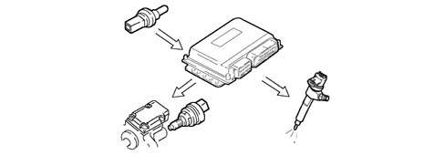
Control of the quantity of fuel injected
On the basis of the signals coming from the sensors and the values in the map, the control unit:
- it operates the pressure regulator;
- varies the 'pilot' injection time throughout the entire rev range;
- varies the 'main' injection time.
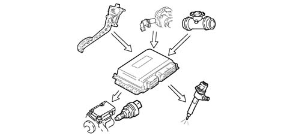
Control of the idle speed
The control unit processes the signals coming from the various sensors and regulates the quantity of fuel injected:
- it operates the pressure regulator;
- it varies the injector injection time.
Within certain limits the speed takes the battery voltage into account.
Fuel cut-off during overrunning
When the accelerator pedal is released the following logics are implemented:
- it cuts off the supply to the fuel injectors;
- partial reactivation of the supply to the injectors before the idle speed is reached;
- it operates the fuel pressure regulator.
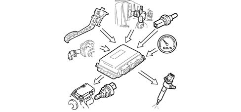
Control of cylinder balance up to 3500 rpm
On the basis of the signals received from the sensors, the control unit controls the precision of the torque up to 3500 rpm.:
- it varies the quantity of fuel injected in the individual injectors (injection time).
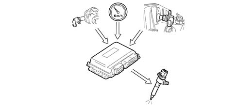
Control of irregular operation
The control unit processes the signals received from the various sensors and corrects the quantity of fuel to be injected in order to improve driveability, reducing jerks during driving through the injector opening time.
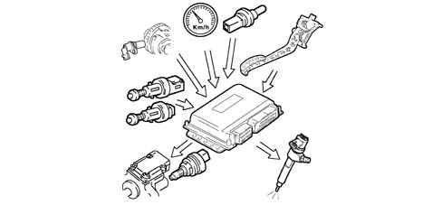
Control of the exhaust fumes during acceleration
In order to limit smoke during fast transitions, the control unit, on the basis of the signals received from the accelerator pedal potentiometer, flow meter and engine rpm, limits the quantity of fuel to be injected via:
- the pressure regulator
- the injection time of the fuel injectors.
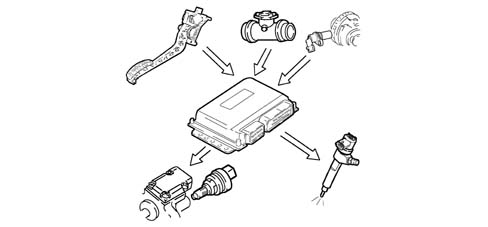
Control of the exhaust gas recirculation (e.g.r.)
In accordance with EURO 3 anti-pollution regulations, the control unit, on the basis of the engine load and signal coming from the accelerator pedal potentiometer, limits the quantity of fresh air drawn in, implementing the partial intake of exhaust gases, via:
- regulating the opening of the electric E.G.R. valve.
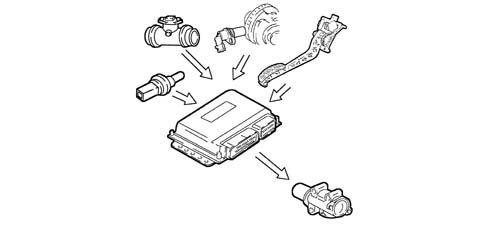
Control of the maximum torque restriction
According to the number of revs, the control unit calculates the following from predefined maps:
- the torque limit;
- the permissible fumes (limit).
It compares these minimum values and corrects them with other parameters:
- coolant temperature;
- engine rpm;
- vehicle speed;
- intake air temperature obtained from the built in air temperature/excess pressure sensor,
and controls the quantity of fuel to be injected (pressure regulator - injectors).
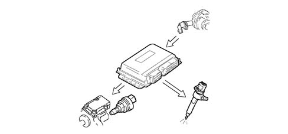
Control of the maximum speed limit
When the engine reaches 5000 rpm, the control unit interrupts the operation of the injectors and consequently the supply pressure is reduced.
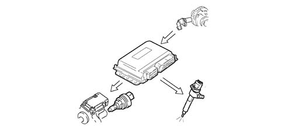
Control of the heater plugs
The control unit, during the following stages:
- starting;
- post-starting
- times the operation of the plug preheater control unit according to the engine temperature.
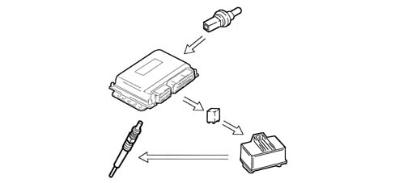
Control of entry into operation of the air conditioning system
The control unit operates the air conditioning compressor:
- switching it on/off when the relevant switch is pressed;
- switching it off momentarily (for around 6 s) if there is substantial acceleration or a request for maximum power.
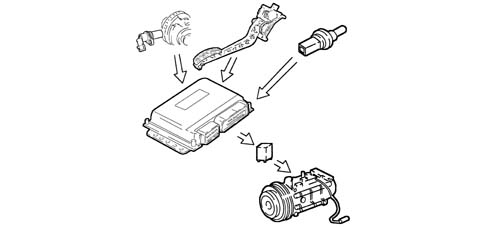
Control of the auxiliary electric fuel pump
Irrespective of the engine speed, the control unit:
- supplies the auxiliary fuel pump with the ignition key in the ON position;
- excludes the auxiliary pump supply if the engine is not started up within a few seconds.
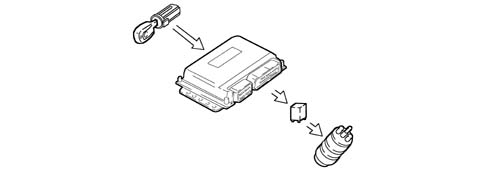
Control of the position of the cylinders
During each revolution of the engine, the control unit recognizes which cylinder is in the explosion stroke and operates the injection sequence at the appropriate cylinder.
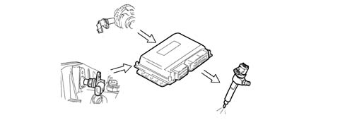
Control of the main injection and pilot injection advance
On the basis of the signals coming from the various sensors, including the absolute pressure sensor in the actual control unit, the control unit determines the optimum injection point according to an internal map, not only in relation to driving comfort, but also in accordance with EURO 3 emission limits.
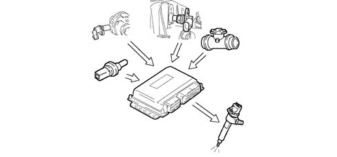
Control of closed loop injection pressure
On the basis of the engine load, determined by processing the signals coming from the various sensors, the control unit operates the regulator to obtain optimum line pressure.
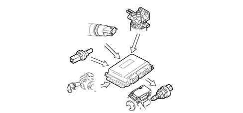
Control of the electrical balance
According to the battery voltage, the control unit varies the idle speed:
- it increases the injector injection time;
- it regulates the line pressure.
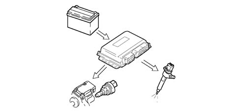
Control of vgt variable geometry turbine
At the various engine operating speeds, the control unit processes the signal coming from the supercharging sensor and determines the quantity of fuel to be injected:
- it varies the injection time;
- it regulates the geometry of the turbine in order to optimise performance under all operating conditions.
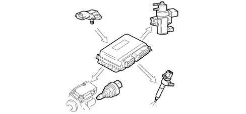
Control of the electric fans
The control unit, in accordance with the coolant temperature and pressure of the refrigerant in the air conditioning system, controls:
- the switching on of the fans at the first or second speed.
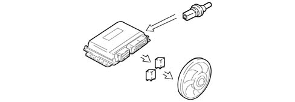
Control of butterfly closure on switching off
In order to limit engine shake during switching off, the control unit controls the immediate closure of the butterfly at intake. Under all other operating conditions, the butterfly remains open.
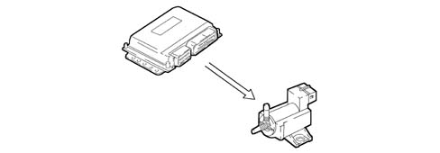
Control of cruise control system (where fitted)
According to the position of the cruise control lever, the control unit directly controls the quantity of fuel injected to control and maintain the vehicle speed memorized.
A warning light in the dashboard, activated by the control unit, indicates whether the system is operating or not.
The cruise control is momentarily disabled:
- by operating the brake,
- by operating the clutch;
- the resume button restores the speed memorized.
The cruise control is not disabled if there is an acceleration request (e.g. overtaking) and the vehicle automatically returns to the speed set as soon as the accelerator is released.
The ASR function (anti-spin) has priority over the cruise control for safety reasons.
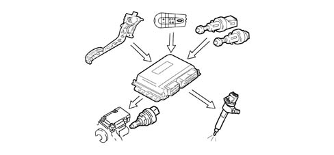
Applies to: engines: 2.4 JTD 20v; all production periods
SPECIFCATIONS
FUNCTION
The EDC-16C8 Common Rail is a high pressure electronic injection system for direct injection fast diesel engines.
The main features are:
- availability of high injection pressures (1400 bar);
- possibility of modulating these pressures between 150 bar and a maximum operating pressure of 1400 bar, irrespective of the engine rotation speed and load;
- capacity of operating at high engine speeds (up to 5000 rpm in full load conditions);
- precision injection (advance and duration of injection);
- reduction in consumption;
- reduction in emissions.
The main functions of the system are basically as follows:
- control of fuel temperature;
- control of engine coolant temperature;
- control of quantity of fuel injected;
- control of idle speed
- fuel cut off during deceleration;
- control of cylinder balance during idling
- control of irregular operation;
- control of exhaust fumes during acceleration
- control of exhaust gas recirculation (E.G.R.)
- control of maximum torque limiting
- control of maximum speed limiting
- control of heater plugs
- control of entry into operation of climate control system (where fitted)
- control of auxiliary fuel pump
- control of cylinder position
- control of main and pilot injection advance
- control of closed loop injection pressure
- control of electrical balance
- control of supercharging pressure
- self test
- connection with Body Computer for ALFA CODE.
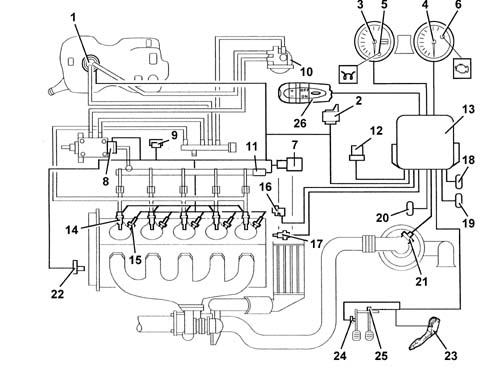
1. Auxiliary fuel pump 2. Heater plugs control unit 3. Speedometer 4. Rev counter 5. Glow plug warning light 6. Injection warning light 7. E.G.R. solenoid valve 8. Fuel pressure regulator 9. Pressure relief sensor 10. Fuel heater with integrated fuel temperature sensor 11. Fuel pressure sensor 12. Relay 13. Engine management control unit 14. Injectors 15. Heater plugs 16. Rpm sensor 17. Engine coolant temperature sensor 18. Climate control connector 19. Diagnostic connector 20. Connector connected to Body Computer for ALFA CODE 21. Air flow meter 22. Timing sensor 23. Accelerator pedal potentiometer 24. Clutch pedal switch 25. Brake pedal switch 26. Cruise Control (where fitted)
OPERATING
OPERATING LOGICS
Introduction
The Common Rail systems makes it possible to carry out a pre-injection (pilot injection) before T.D.C. with the advantage of reducing the pressure in the combustion chamber more evenly, reducing the combustion noise, typical of direct injection engines.
The engine management control unit controls the quantity of fuel injected, regulating the line pressure and injection times.
The engine management control unit processes the following information to control the quantity of fuel to inject:
- rpm
- coolant temperature
- turbocharging pressure
- air temperature
- intake air quantity
- battery voltage
- diesel pressure
- accelerator pedal position.
Diagram of input/output info to/from engine management control unit
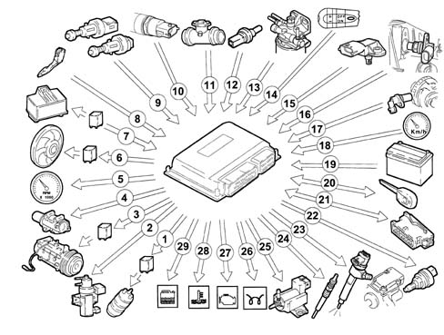
1. Auxiliary fuel pump 2. VGT solenoid 3. Air conditioner compressor 4. E.G.R. solenoid valve 5. Rev counter 6. Fans 7. Plug preheating control unit 8. Accelerator pedal potentiometer 9. Brake/clutch pedal switch 10. Fuel pressure sensor 11. Flow meter 12. Coolant temperature sensor 13. Fuel temperature sensor 14. Cruise Control (where fitted) 15. Pressure relief sensor 16. Timing sensor 17. Rpm sensor 18. Speedometer 19. Battery 20. Alfa CODE 21. Diagnostic socket 22. Pressure regulator 23. Injectors 24. Heater plugs 25. Electro-pnumeatic throttle control valve 26. Glow plug warning light 27. Injection warning light 28. Max coolant temperature warning light 29. Water in fuel warning light
Self-diagnosis
The engine management control unit's autodiagnosis checks the signals coming from the sensors, comparing them with the permitted parameter limits.
Indication of faults upon start-up;
Warning light on for 4 secs indicates test stage;
Warning light off after 4 secs indicates no faults in components that could affect the values established in emission control regulations
warning light on after 4 s indicates fault
Fault indication during operation
Warning light on indicates fault;
warning light off indicates no faults in components that could affect the values established by emission control regulations
Recovery
From time to time the engine management control unit defines the type of recovery according to the faulty components.
The recovery parameters are managed by those components which are not faulty.
If the warning light flashes this indicates that the injectors are not calibrated.
Recognition of Alfa Code
The moment the Body Computer receives the ignition ON signal, it converses with the engine management control unit to allow starting. For vehicles equipped with Passive Entry see 55 ELECTRICAL EQUIPMENT .
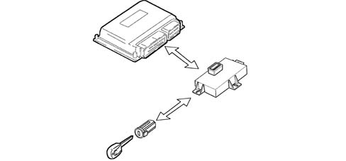
Control of the fuel temperature
With the temperature of the fuel 110° C, measured by the sensor at the recirculation manifold, the engine management control unit operates the pressure regulator in order to reduce the line pressure (it does not modify the injection times).
Control of the engine coolant temperature
With the temperature of the engine coolant greater than 105° C, the engine management control unit:
- reduces the quantity of fuel injected (reduces the engine power);
- operates the cooling fans through the fan control interface;
- lights up the coolant overheating warning light.
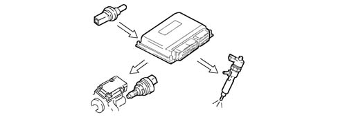
Control of the quantity of fuel injected
On the basis of the signals coming from the sensors and the values in the map, the engine management control unit:
- operates the pressure regulator;
- varies the 'pilot' injection time up to 3000 rpm;
- varies the 'main' injection time.
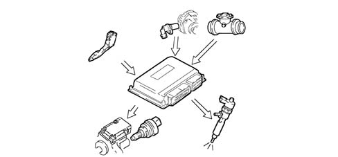
Control of the idle speed
The engine management control unit processes the signals coming from the various sensors and regulates the quantity of fuel injected:
- it operates the pressure regulator;
- it varies the injector injection time.
Within certain limits the speed takes the battery voltage into account.
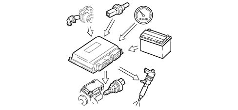
Fuel cut-off during over-run
When the accelerator pedal is released the following logics are implemented by the engine management control unit:
- it cuts off the supply to the fuel injectors;
- it partially reactivates the supply to the injectors before the idle speed is reached;
- it operates the fuel pressure regulator.
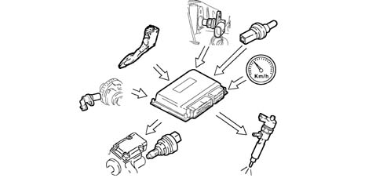
Control of cylinder balance up to 3500 rpm
On the basis of the signals received from the sensors, the engine management control unit controls the precision of the torque up to 3500 rpm.
- it varies the quantity of fuel injected in the individual injectors (injection time).
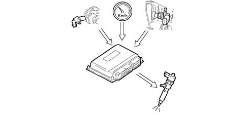
Control of irregular operation
The engine management control unit processes the signals received from the various sensors and determines the quantity of fuel to be injected via:
- the pressure regulator;
- the opening time of the injectors.
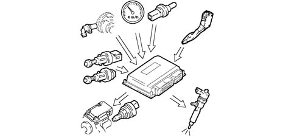
Control of the exhaust fumes during acceleration
When there is considerable acceleration, the engine management control unit determines the optimum quantity of fuel to be injected, on the basis of the signals received from the flow meter and engine rpm sensor:
- it operates the pressure regulator;
- it varies the injector injection time.
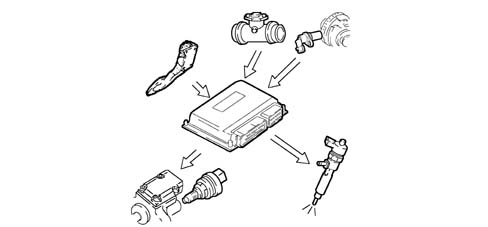
Control of the exhaust gas recirculation (E.G.R.)
On the basis of the engine load and signal coming from the accelerator pedal potentiometer, the engine management control unit restricts the amount of air drawn in, implementing the partial intake of exhaust gases through:
- the adjustment of the E.G.R. solenoid valve opening
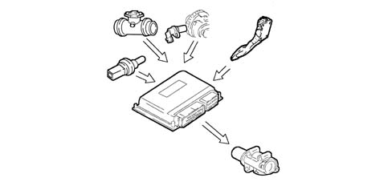
Control of the maximum torque restriction
According to the number of revs, the engine management control unit calculates the following from predefined maps:
- the torque limit
- the permissible fumes (limit).
It compares these minimum values and corrects them with other parameters:
- coolant temperature
- engine rpm
- vehicle speed
- intake air temperature obtained from the built in air temperature/excess pressure sensor
and controls the quantity of fuel to be injected (pressure regulator - injectors).
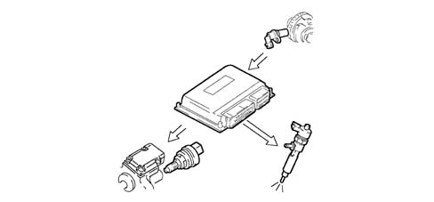
Control of the maximum speed limit
According to the number of revs, the engine management control unit implements two intervention strategies:
- at 5000 rpm it cuts off the fuel, reducing the line pressure;
- above 5400 rpm it deactivates the auxiliary pump and the injectors.
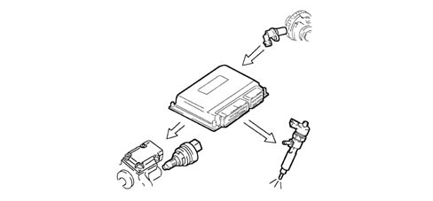
Control of the heater plugs
In the following stages:
- starting,
- post-starting,
the engine management control unit times the operation of the heater plugs control unit according to the engine temperature.
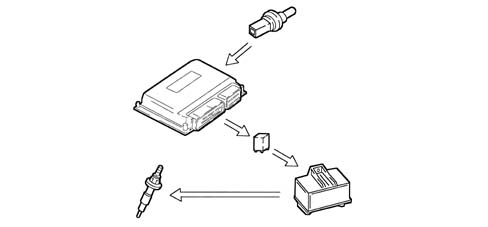
Control of entry into operation of the air conditioning system
The engine management control unit operates the air conditioning compressor:
- switching it on/off when the relevant switch is pressed;
- switching it off momentarily (for around 6 s) if there is substantial acceleration or a request for maximum power.
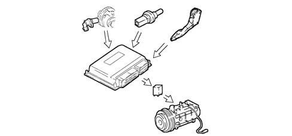
Control of the auxiliary electric fuel pump
Irrespective of the engine speed, the engine management control unit:
- supplies the auxiliary fuel pump with the ignition key in the ON position;
- excludes the auxiliary pump supply if the engine is not started up within a few seconds.
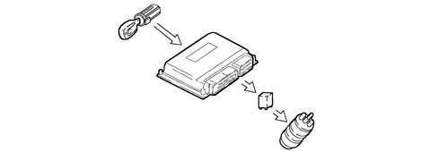
Control of the position of the cylinders
During each revolution of the engine, the engine management control unit recognizes which cylinder is in the combustion stroke and controls the injection sequence at the appropriate cylinder.
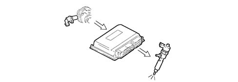
Control of the main injection and pilot injection advance
On the basis of the signals coming from the various sensors, including the absolute pressure sensor in the actual control unit, the engine management control unit determines the optimum injection point according to an internal map, in relation to driving comfort and exhaust emission limits.
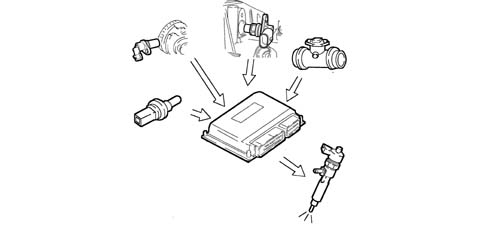
Control of closed loop injection pressure
On the basis of the engine load, determined by processing the signals coming from the various sensors, the engine management control unit operates the regulator to obtain optimum line pressure.
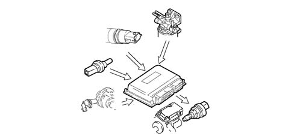
Control of the electrical balance
According to the battery voltage, the engine management control unit varies the idle speed:
- it increases the injector injection time;
- it regulates the line pressure.
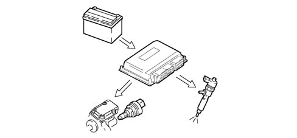
Control of VGT variable geometry turbine
At the various engine operating speeds, the engine management control unit processes the signal coming from the supercharging sensor and determines the quantity of fuel to be injected:
- it operates the pressure regulator;
- it varies the injection time;
- it regulates the geometry of the turbine in order to optimise performance under all operating conditions.
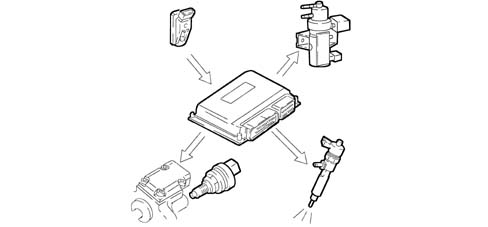
Control of the electric fans
The engine management control unit, in accordance with the coolant temperature and pressure of the refrigerant in the air conditioning system, converses with the fan control interface to give the go ahead for:
- the switching on of the fans at the first or second speed.
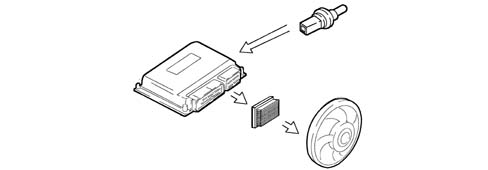
Control of butterfly closure on switching off
In order to prevent engine shake during switching off, the engine management control unit controls the immediate closure of the butterfly at intake. Under all other operating conditions, the butterfly remains open.
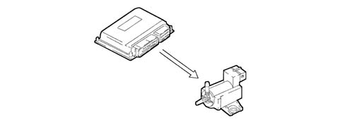
Control of the Cruise Control system
According to the position of the cruise control lever, the engine management control unit directly controls the quantity of fuel injected to control and maintain the vehicle speed memorized.
A warning light in the dashboard, activated by the engine management control unit, indicates whether the system is operating or not.
The cruise control is momentarily disabled:
- by operating the brake,
- by operating the clutch;
the 'recall' button is used to return to the speed memorized.
The cruise control is not disabled if there is an acceleration request (e.g. overtaking) and the vehicle automatically returns to the speed set as soon as the accelerator is released.
The ASR (anti-spin) function has priority over the cruise control for safety reasons.
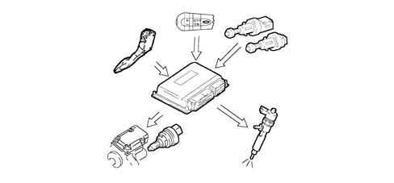